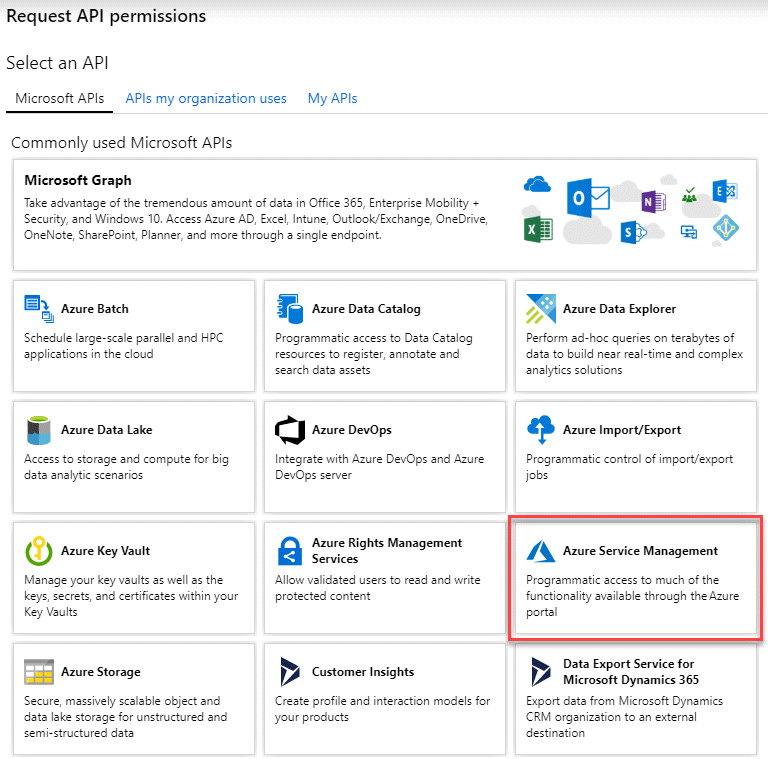
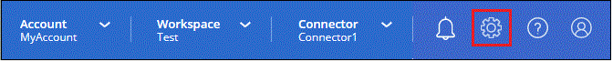
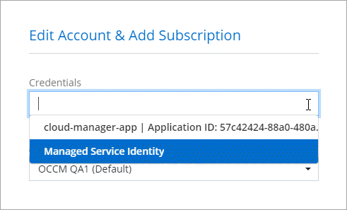

문서 변경 요청
문서 변경 요청 이 페이지 편집
이 페이지 편집 기여하는 방법 자세히 알아보기
기여하는 방법 자세히 알아보기Cloud Manager에 대한 Azure 자격 증명 및 구독 관리
Cloud Volumes ONTAP 시스템을 생성할 때 해당 시스템에서 사용할 Azure 자격 증명을 선택해야 합니다. 또한 선불 종량제 라이센스를 사용하는 경우 Marketplace 구독을 선택해야 합니다. Cloud Volumes ONTAP에 대해 여러 Azure 자격 증명 또는 여러 Azure 마켓플레이스 구독을 사용해야 하는 경우 이 페이지의 단계를 따릅니다.
Cloud Manager에서 Azure 구독 및 자격 증명을 추가하는 방법에는 두 가지가 있습니다.
-
Azure 구독과 Azure 관리 ID를 추가로 연결합니다.
-
다른 Azure 자격 증명을 사용하여 Cloud Volumes ONTAP를 배포하려는 경우 서비스 보안 주체를 사용하여 Azure 사용 권한을 부여하고 해당 자격 증명을 Cloud Manager에 추가합니다.
관리되는 ID와 추가 Azure 구독을 연결합니다
Cloud Manager를 사용하면 Cloud Volumes ONTAP를 구축할 Azure 자격 증명 및 Azure 구독을 선택할 수 있습니다. 를 연결하지 않으면 관리 ID 프로필에 대해 다른 Azure 구독을 선택할 수 없습니다 "관리 ID" 있습니다.
관리되는 ID는 입니다 "초기 Azure 계정입니다" Connector를 Cloud Manager에서 구축하는 경우 Connector를 구축한 경우 Cloud Manager는 Cloud Manager 운영자 역할을 생성하여 Connector 가상 머신에 할당합니다.
-
Azure 포털에 로그인합니다.
-
Subscriptions * 서비스를 연 다음 Cloud Volumes ONTAP를 배포할 구독을 선택합니다.
-
IAM(액세스 제어) * 을 클릭합니다.
-
Add * > * Add role assignment * 를 클릭한 후 권한을 추가합니다.
-
Cloud Manager Operator * 역할을 선택합니다.

Cloud Manager Operator는 Connector 정책에 제공된 기본 이름입니다. 역할에 다른 이름을 선택한 경우 대신 해당 이름을 선택합니다. -
Virtual Machine * 에 대한 액세스 권한을 할당합니다.
-
Connector 가상 머신이 생성된 서브스크립션을 선택합니다.
-
Connector 가상 머신을 선택합니다.
-
저장 * 을 클릭합니다.
-
-
-
추가 구독에 대해 이 단계를 반복합니다.
새 작업 환경을 만들 때 이제 관리되는 ID 프로필에 대해 여러 Azure 구독에서 선택할 수 있습니다.

Cloud Manager에 Azure 자격 증명을 추가하는 중입니다
Cloud Manager에서 Connector를 구축하면 Cloud Manager가 필요한 권한이 있는 가상 머신에서 시스템에서 시스템에 할당된 관리 ID를 활성화합니다. Cloud Volumes ONTAP에 대한 새 작업 환경을 생성할 때 Cloud Manager는 기본적으로 이러한 Azure 자격 증명을 선택합니다.

|
기존 시스템에 Connector 소프트웨어를 수동으로 설치한 경우 초기 자격 증명 세트가 추가되지 않습니다. "Azure 자격 증명 및 권한에 대해 알아보십시오". |
_different_sAzure 자격 증명을 사용하여 Cloud Volumes ONTAP를 배포하려는 경우 각 Azure 계정에 대해 Azure Active Directory에서 서비스 보안 주체를 만들고 설정하여 필요한 권한을 부여해야 합니다. 그런 다음 Cloud Manager에 새 자격 증명을 추가할 수 있습니다.
서비스 보안 주체를 사용하여 Azure 사용 권한 부여
Cloud Manager는 Azure에서 작업을 수행할 수 있는 권한이 필요합니다. Azure Active Directory에서 서비스 보안 주체를 생성 및 설정하고 Cloud Manager에 필요한 Azure 자격 증명을 획득하여 Azure 계정에 필요한 권한을 부여할 수 있습니다.
다음 그림에서는 Cloud Manager가 Azure에서 작업을 수행할 수 있는 권한을 얻는 방법을 보여 줍니다. 하나 이상의 Azure 구독에 연결된 서비스 보안 주체 개체는 Azure Active Directory의 Cloud Manager를 나타내며 필요한 권한을 허용하는 사용자 지정 역할에 할당됩니다.

Azure Active Directory 응용 프로그램을 만드는 중입니다
Cloud Manager가 역할 기반 액세스 제어에 사용할 수 있는 Azure AD(Active Directory) 응용 프로그램 및 서비스 보안 주체를 만듭니다.
Active Directory 응용 프로그램을 만들고 응용 프로그램을 역할에 할당하려면 Azure에 적절한 권한이 있어야 합니다. 자세한 내용은 을 참조하십시오 "Microsoft Azure 문서: 필요한 권한".
-
Azure 포털에서 * Azure Active Directory * 서비스를 엽니다.

-
메뉴에서 * 앱 등록 * 을 클릭합니다.
-
새 등록 * 을 클릭합니다.
-
응용 프로그램에 대한 세부 정보를 지정합니다.
-
* 이름 *: 응용 프로그램의 이름을 입력합니다.
-
* 계정 유형 *: 계정 유형을 선택합니다(모두 Cloud Manager와 연동함).
-
* URI 리디렉션 *: 이 필드는 비워 둘 수 있습니다.
-
-
Register * 를 클릭합니다.
AD 응용 프로그램 및 서비스 보안 주체를 만들었습니다.
역할에 애플리케이션 할당
서비스 보안 주체를 하나 이상의 Azure 구독에 바인딩하고 사용자 지정 "OnCommand 클라우드 관리자 운영자" 역할을 할당해야 클라우드 관리자가 Azure에서 권한을 갖게 됩니다.
-
사용자 지정 역할 만들기:
-
의 내용을 복사합니다 "Connector에 대한 사용자 지정 역할 권한" JSON 파일에 저장합니다.
-
할당 가능한 범위에 Azure 구독 ID를 추가하여 JSON 파일을 수정합니다.
사용자가 Cloud Volumes ONTAP 시스템을 생성할 각 Azure 구독에 대한 ID를 추가해야 합니다.
-
예 *
"AssignableScopes": [ "/subscriptions/d333af45-0d07-4154-943d-c25fbzzzzzzz", "/subscriptions/54b91999-b3e6-4599-908e-416e0zzzzzzz", "/subscriptions/398e471c-3b42-4ae7-9b59-ce5bbzzzzzzz" -
-
JSON 파일을 사용하여 Azure에서 사용자 지정 역할을 생성합니다.
다음 단계에서는 Azure Cloud Shell에서 Bash를 사용하여 역할을 생성하는 방법을 설명합니다.
-
시작 "Azure 클라우드 셸" Bash 환경을 선택하십시오.
-
JSON 파일을 업로드합니다.

-
다음 Azure CLI 명령을 입력합니다.
az role definition create --role-definition Policy_for_Setup_As_Service_Azure.json이제 Connector 가상 머신에 할당할 수 있는 Cloud Manager Operator라는 사용자 지정 역할이 있어야 합니다.
-
-
-
역할에 응용 프로그램을 할당합니다.
-
Azure 포털에서 * Subscriptions * 서비스를 엽니다.
-
구독을 선택합니다.
-
IAM(Access Control) > 추가 > 역할 할당 추가 * 를 클릭합니다.
-
Role * 탭에서 * Cloud Manager Operator * 역할을 선택하고 * Next * 를 클릭합니다.
-
Members* 탭에서 다음 단계를 완료합니다.
-
사용자, 그룹 또는 서비스 보안 주체 * 를 선택한 상태로 유지합니다.
-
구성원 선택 * 을 클릭합니다.

-
응용 프로그램의 이름을 검색합니다.
예를 들면 다음과 같습니다.

-
응용 프로그램을 선택하고 * 선택 * 을 클릭합니다.
-
다음 * 을 클릭합니다.
-
-
검토 + 할당 * 을 클릭합니다.
이제 서비스 보안 주체에 Connector를 배포하는 데 필요한 Azure 권한이 있습니다.
여러 Azure 구독에서 Cloud Volumes ONTAP를 배포하려면 서비스 보안 주체를 해당 구독 각각에 바인딩해야 합니다. Cloud Manager를 사용하면 Cloud Volumes ONTAP를 구축할 때 사용할 구독을 선택할 수 있습니다.
-
Windows Azure 서비스 관리 API 권한을 추가하는 중입니다
서비스 보안 주체는 "Windows Azure Service Management API" 권한이 있어야 합니다.
-
Azure Active Directory * 서비스에서 * 앱 등록 * 을 클릭하고 응용 프로그램을 선택합니다.
-
API 권한 > 권한 추가 * 를 클릭합니다.
-
Microsoft API * 에서 * Azure Service Management * 를 선택합니다.

-
Access Azure Service Management as organization users * 를 클릭한 다음 * Add permissions * 를 클릭합니다.

애플리케이션 ID 및 디렉토리 ID를 가져오는 중입니다
Azure 계정을 Cloud Manager에 추가하는 경우 응용 프로그램의 응용 프로그램(클라이언트) ID와 디렉터리(테넌트) ID를 제공해야 합니다. Cloud Manager는 ID를 사용하여 프로그래밍 방식으로 로그인합니다.
-
Azure Active Directory * 서비스에서 * 앱 등록 * 을 클릭하고 응용 프로그램을 선택합니다.
-
응용 프로그램(클라이언트) ID * 와 * 디렉터리(테넌트) ID * 를 복사합니다.

클라이언트 암호 생성
클라이언트 암호를 생성한 다음 Cloud Manager가 이 암호를 사용하여 Azure AD를 인증할 수 있도록 Cloud Manager에 비밀의 값을 제공해야 합니다.
-
Azure Active Directory * 서비스를 엽니다.
-
앱 등록 * 을 클릭하고 응용 프로그램을 선택합니다.
-
인증서 및 비밀 > 새 클라이언트 비밀 * 을 클릭합니다.
-
비밀과 기간에 대한 설명을 제공하십시오.
-
추가 * 를 클릭합니다.
-
클라이언트 암호 값을 복사합니다.

이제 서비스 보안 주체가 설정되었으므로 응용 프로그램(클라이언트) ID, 디렉터리(테넌트) ID 및 클라이언트 암호 값을 복사해야 합니다. Azure 계정을 추가할 때 Cloud Manager에 이 정보를 입력해야 합니다.
Cloud Manager에 자격 증명 추가
필요한 권한이 있는 Azure 계정을 제공한 후 해당 계정에 대한 자격 증명을 Cloud Manager에 추가할 수 있습니다. 이 단계를 완료하면 다른 Azure 자격 증명을 사용하여 Cloud Volumes ONTAP를 시작할 수 있습니다.
클라우드 공급자에서 이러한 자격 증명을 만든 경우 사용할 수 있을 때까지 몇 분 정도 걸릴 수 있습니다. 몇 분 후에 Cloud Manager에 자격 증명을 추가합니다.
Cloud Manager 설정을 변경하려면 먼저 Connector를 생성해야 합니다. "자세히 알아보기".
-
Cloud Manager 콘솔의 오른쪽 위에서 설정 아이콘을 클릭하고 * 자격 증명 * 을 선택합니다.

-
자격 증명 추가 * 를 클릭하고 마법사의 단계를 따릅니다.
-
* 자격 증명 위치 *: * Microsoft Azure > 커넥터 * 를 선택합니다.
-
* 자격 증명 정의 *: 필요한 권한을 부여하는 Azure Active Directory 서비스 보안 주체에 대한 정보를 입력합니다.
-
응용 프로그램(클라이언트) ID: 을 참조하십시오 [Getting the application ID and directory ID].
-
디렉토리(테넌트) ID: 을 참조하십시오 [Getting the application ID and directory ID].
-
클라이언트 암호: 을 참조하십시오 [Creating a client secret].
-
-
* Marketplace 구독 *: 지금 가입하거나 기존 구독을 선택하여 마켓플레이스 구독을 이러한 자격 증명과 연결합니다.
PAYGO(시간당 급여)로 Cloud Volumes ONTAP를 지불하려면 Azure 마켓플레이스의 구독과 Azure 자격 증명이 연결되어 있어야 합니다.
-
* 검토 *: 새 자격 증명에 대한 세부 정보를 확인하고 * 추가 * 를 클릭합니다.
-
이제 세부 정보 및 자격 증명 페이지에서 다른 자격 증명 집합으로 전환할 수 있습니다 "새 작업 환경을 만들 때"

기존 자격 증명을 관리합니다
Marketplace 구독을 연결하고 자격 증명을 편집하고 삭제하여 Cloud Manager에 이미 추가한 Azure 자격 증명을 관리합니다.
Azure Marketplace 구독을 자격 증명에 연결
Azure 자격 증명을 Cloud Manager에 추가한 후 Azure Marketplace 구독을 해당 자격 증명에 연결할 수 있습니다. 구독을 통해 선불 종량제 Cloud Volumes ONTAP 시스템을 생성하고 다른 NetApp 클라우드 서비스를 사용할 수 있습니다.
Cloud Manager에 자격 증명을 이미 추가한 후에 Azure Marketplace 구독을 연결할 수 있는 두 가지 시나리오가 있습니다.
-
처음에 Cloud Manager에 자격 증명을 추가했을 때 구독을 연결하지 않았습니다.
-
기존 Azure Marketplace 구독을 새 구독으로 바꾸려는 경우
Cloud Manager 설정을 변경하려면 먼저 Connector를 생성해야 합니다. "자세히 알아보기".
-
Cloud Manager 콘솔의 오른쪽 위에서 설정 아이콘을 클릭하고 * 자격 증명 * 을 선택합니다.
-
자격 증명 집합에 대한 작업 메뉴를 클릭한 다음 * 가입 연결 * 을 선택합니다.

-
드롭다운 목록에서 구독을 선택하거나 * 구독 추가 * 를 클릭하고 단계에 따라 새 구독을 만듭니다.
다음 비디오는 작업 환경 마법사의 컨텍스트에서 시작되지만 * 구독 추가 * 를 클릭한 후 동일한 워크플로를 보여 줍니다.
자격 증명 편집
Azure 서비스 자격 증명에 대한 세부 정보를 수정하여 Cloud Manager에서 Azure 자격 증명을 편집합니다. 예를 들어, 서비스 보안 주체 응용 프로그램에 대해 새 암호가 만들어진 경우 클라이언트 암호를 업데이트해야 할 수 있습니다.
-
Cloud Manager 콘솔의 오른쪽 위에서 설정 아이콘을 클릭하고 * 자격 증명 * 을 선택합니다.
-
자격 증명 집합에 대한 작업 메뉴를 클릭한 다음 * 자격 증명 편집 * 을 선택합니다.
-
필요한 내용을 변경한 다음 * 적용 * 을 클릭합니다.
자격 증명을 삭제하는 중입니다
자격 증명 세트가 더 이상 필요하지 않으면 Cloud Manager에서 삭제할 수 있습니다. 작업 환경과 연결되지 않은 자격 증명만 삭제할 수 있습니다.
-
Cloud Manager 콘솔의 오른쪽 위에서 설정 아이콘을 클릭하고 * 자격 증명 * 을 선택합니다.
-
자격 증명 집합에 대한 작업 메뉴를 클릭한 다음 * 자격 증명 삭제 * 를 선택합니다.
-
확인하려면 * 삭제 * 를 클릭합니다.